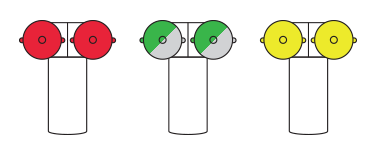

Many of the pipes on this site are standpipe connections. They are an essential part of a system that distributes high-pressure water throughout a building’s interior in case of a fire. These systems are required in all buildings over 75 feet or greater than 6 stories.
They are called siamese connections because of their distinctive y-shape with two ports. Firefighters connect the nearest fire hydrant to one of the ports and use the second as either backup in case one is sealed shut, or to provide additional water pressure.
However not all siamese connections are standpipes, and you can identify its purpose by the colour of the cap.

Red is a standpipe. Green or aluminium is an interior sprinkler system. Yellow is a combined standpipe and sprinkler system.
Keep an eye out for these personalities on the street and feel free to get in touch with the pipe master at newyorkpipes@gmail.com.